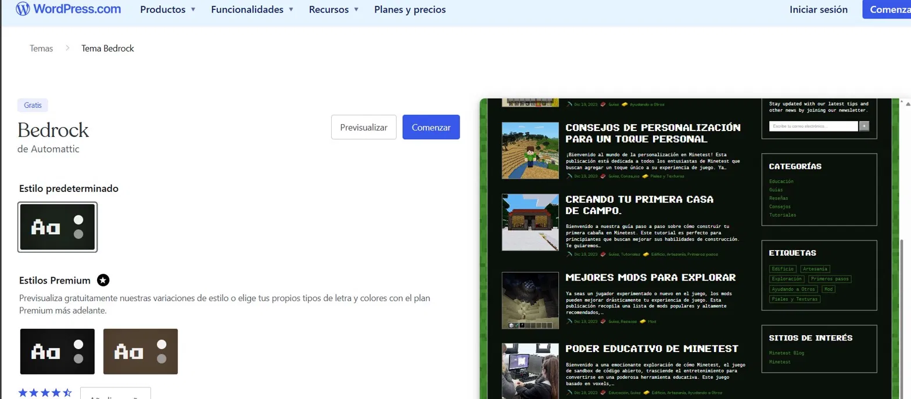
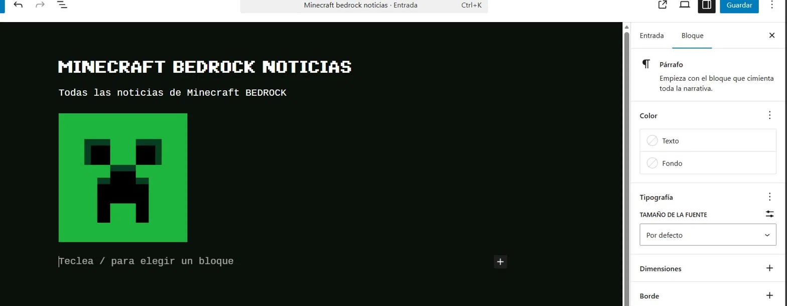
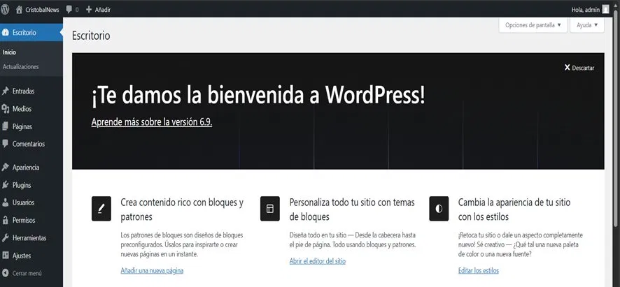
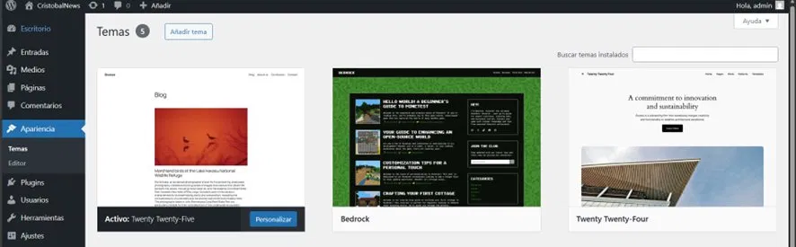
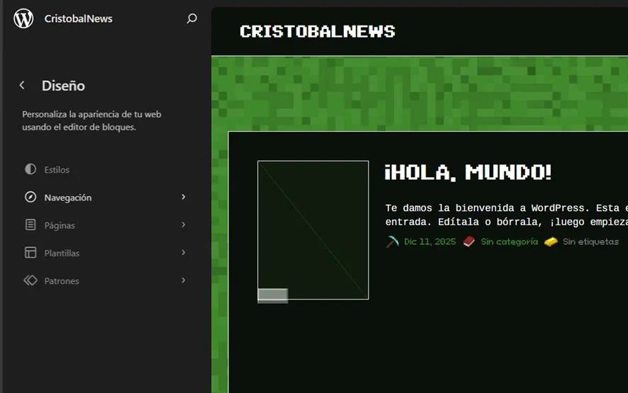

CRIS.ZAMBRANO_
◀ VOLVER
WORDPRESS.EXE
C:\>
cat descripcion.txt
// Proyecto: Página Web con WordPress
INFO:
Instalación y configuración de WordPress en XAMPP local
INFO:
Tema Bedrock — Blog de noticias "CristobalNews"
INFO:
Entradas, categorías, usuarios y permisos configurados
INFO:
Instalación remota de Joomla 4.4 mediante FileZilla
STATUS:
PROYECTO COMPLETADO ✓
🌐 WORDPRESS
🔧 JOOMLA
🗄️ MYSQL
📦 XAMPP
📁 FILEZILLA
🎨 BEDROCK THEME
◈ CAPTURAS DEL PROYECTO ◈
▶ WORDPRESS — CRISTOBALNEWS
5 CAPTURAS · 2025-2026





◀ PREV
1 / 5
NEXT ▶
◈ DOCUMENTACIÓN ◈
📄 VER MANUAL PDF
⬇ DESCARGAR MANUAL